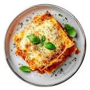

Lasagna Recipe

Description
Lasagna is a delicious, comforting Italian dish made with layers of tender pasta, rich meat sauce,
creamy ricotta cheese, and melted mozzarella. Every bite is packed with savory flavors, making it a perfect
meal for family dinners, special occasions, or whenever you're craving something warm and satisfying.
This homemade lasagna recipe is easy to follow and uses simple ingredients to create a flavorful, cheesy dish.
As it bakes in the oven, the layers come together to create a golden, bubbly top and a soft, delicious center.
Serve it with garlic bread or a fresh salad for a complete meal everyone will love!
Ingredients
For the Meat Sauce
- 1 lb ground beef
- 1 small onion, chopped
- 3 cloves garlic, minced
- 1 jar (24 oz) marinara sauce
- 2 tablespoons tomato paste
- 1 teaspoon Italian seasoning
- ½ teaspoon salt
- ½ teaspoon black pepper
- - 1 tablespoon olive oil
For the Cheese Filling
- 15 oz ricotta cheese
- 1 large egg
- ½ cup grated Parmesan cheese
- - 1 teaspoon dried parsley
For the Lasagna Layers
- 9–12 lasagna noodles
- 3 cups shredded mozzarella cheese
- ½ cup grated Parmesan cheese (for topping)
- Fresh basil or parsley (optional garnish)
Steps
- Prepare the Meat Sauce: Cook the ground beef with onions and garlic, then add marinara sauce and seasonings and let it simmer.
- Cook the Noodles: Boil the lasagna noodles in salted water until tender, then drain and set aside
- Prepare the Cheese Mixture: Mix ricotta cheese, egg, Parmesan cheese, and parsley in a bowl until smooth.
- Assemble the Lasagna: Layer meat sauce, noodles, ricotta mixture, and mozzarella cheese in a baking dish until all ingredients are used.
- Bake the Lasagna: Bake at 375°F (190°C) for 25 minutes covered, then 15–20 minutes uncovered until golden and bubbly
- Let It Rest and Serve: Allow the lasagna to cool for 10–15 minutes before slicing and serving.
Home